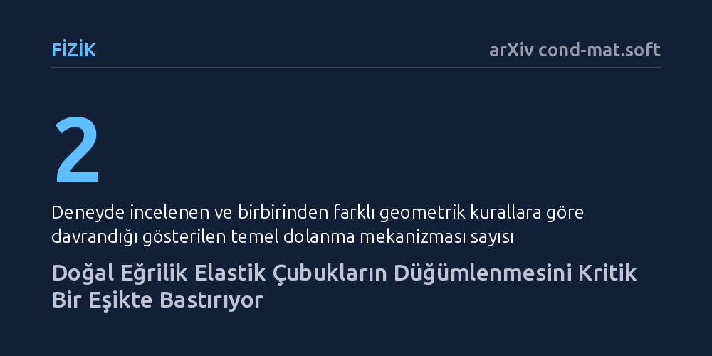

FIZIK · arXiv cond-mat.soft · 2026-10-22
Araştırmacılar, çalkalanan elastik çubukların kendiliğinden düğümlenmesinde doğal eğriliğin rolünü inceledi. Doğal eğriliğin düğümlenmeyi kritik bir eşikte belirgin şekilde bastırdığı, birbirine takılmanın ise eğrilikten ziyade çubuk boyuna bağlı olduğu bulundu.
Kabloların ve biyolojik iplikçiklerin dolaşmasını engellemek için sadece uzunluklarını kısaltmanın değil, malzemeye doğru doğal kıvrımı vermenin de düğümlenmeyi önleyebileceğini gösterir.

Kulaklık kablolarını cebe koyup çıkardığımızda ya da bir kutudaki telleri hareket ettirdiğimizde karmaşık düğümlerle karşılaşmak hemen her insanın yaşadığı gündelik bir durumdur. Ancak bu dolanma davranışı yalnızca gündelik eşyalarla sınırlı değildir; hücre çekirdeğine paketlenen DNA zincirlerinden cerrahi dikiş ipliklerine ve tekstil liflerine kadar tüm esnek yapılar benzer biçimde kendiliğinden dolanma eğilimi gösterir. Fizikçiler uzun süredir esnek liflerin hareket halindeyken neden ve nasıl düğüm oluşturduğunu anlamaya çalışmaktadır.
Şimdiye dek yaygın kabul, dolanmanın büyük oranda liflerin uzunluğuna ve ortamdaki çalkantının şiddetine bağlı olduğu yönündeydi. Fakat gözden kaçan kritik bir soru bulunuyordu: Çubuğun veya telin serbest haldeyken sahip olduğu kendi iç eğriliği bu süreci nasıl yönlendirir? Bu soruya verilecek yanıt, dolanmayı engellemek için sadece dış müdahalelere güvenmek yerine, malzemenin geometrik yapısını baştan tasarlayarak düğümlenmenin önüne geçme imkânı sunabilir.
Araştırmacılar bu soruyu aydınlatmak amacıyla kontrollü bir makroskopik laboratuvar deneyi kurguladı. Deneyde farklı yay uzunluklarına ve birbirinden farklı doğal eğriliklere sahip düz ve helisel elastik çubuklar kullanıldı. Çubuklar, tesadüfi etkileri ortadan kaldırmak için istatistiksel bir topluluk oluşturacak biçimde bir araya getirildi ve kontrollü bir çalkalama hareketine tabi tutuldu.
Deney sırasında çubukların birbirine geçme süreçleri iki ayrı mekanizma altında incelendi: gerçek düğüm oluşumu ve çubukların birbirine geometrik olarak takılması. Bu ayrım sayesinde araştırmacılar, çubukların tam bir ilmek oluşturup bağlanması ile sadece birbirine takılıp kilitlenmesinin geometrik parametrelere nasıl farklı tepkiler verdiğini doğrudan gözlemleme fırsatı buldu.
Deneyin en çarpıcı bulgusu, doğal eğriliğin düğümlenme üzerinde tekdüze olmayan baskın bir rol oynadığını ortaya koyması oldu. Çubuklara belirli bir kritik doğal eğrilik kazandırıldığında düğüm oluşumu belirgin biçimde bastırılıyor ve düz çubuklara kıyasla düğümlenme olasılığı ciddi oranda azalıyor. Yani hafif kıvrımlı bir yapı, beklenenin aksine düğüm oluşumunu kolaylaştırmıyor, tam tersine kritik bir değerde bu süreci engelliyor.
Buna karşılık, ikinci mekanizma olan çubukların birbirine takılıp kilitlenmesi eğrilikten neredeyse hiç etkilenmiyor. Araştırmacılar kilitlenmenin esas olarak çubukların uzunluğu ile ölçeklendiğini tespit etti. Kısacası bir çubuk ne kadar uzunsa birbirine takılma ihtimali o kadar artıyor; fakat nihai bir düğüme dönüşüp dönüşmeyeceğini çubuğun sahip olduğu doğal eğrilik belirliyor.
Bu sonuçlar, karmaşık hareketler altındaki esnek filamentlerin davranışını yöneten temel geometrik parametreleri net biçimde tanımlıyor. Doğal eğriliğin düğümlenmeyi önleyici bir unsur olarak kullanılabilmesi; biyomedikal alanda dolaşmayan kateter ve cerrahi ipliklerin geliştirilmesinden, endüstriyel kablo tasarımlarına kadar geniş bir alanda pratik mühendislik çözümlerine zemin hazırlayabilir.
Araştırmacılar ayrıca makroskopik ölçekte elde edilen bu prensiplerin, mikroskobik filament sistemlerine de uyarlanabileceğini ifade ediyor. Özellikle hücre içerisinde yoğun biçimde paketlenen süper kıvrımlı DNA iplikçiklerinin kendiliğinden nasıl düğümlenmediğini veya hücre bölünmesi sırasında nasıl ayrıştığını anlamak için bu geometrik mekanizmalar yeni bir teorik zemin sunabilir.